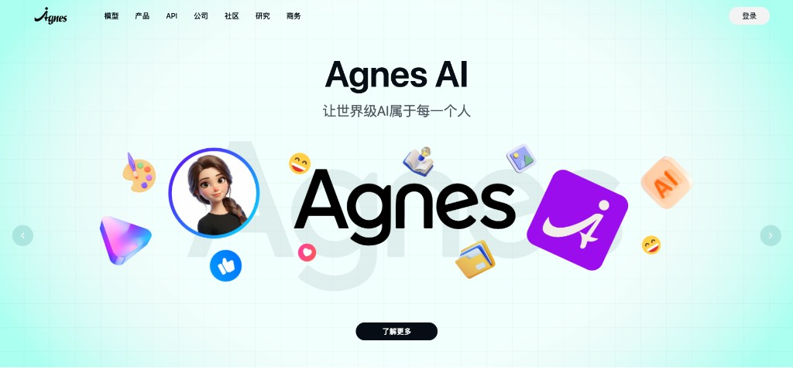
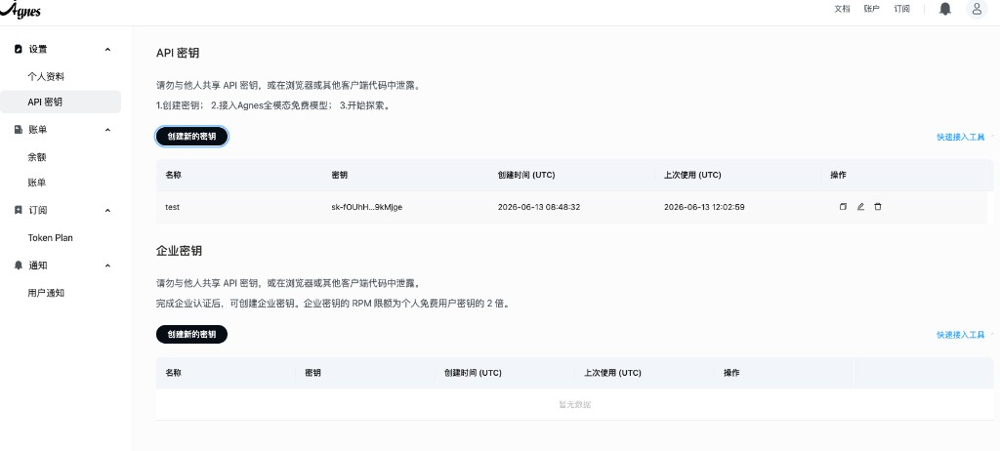
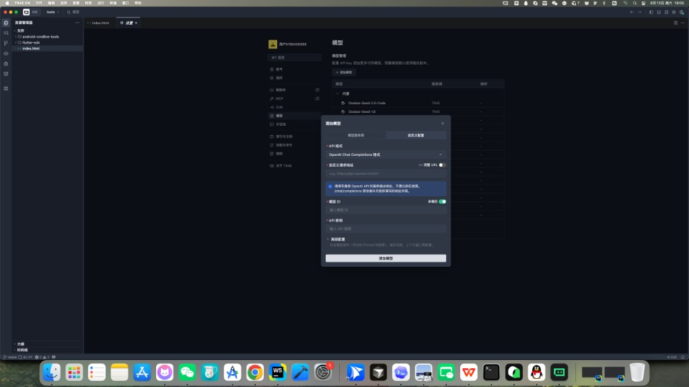
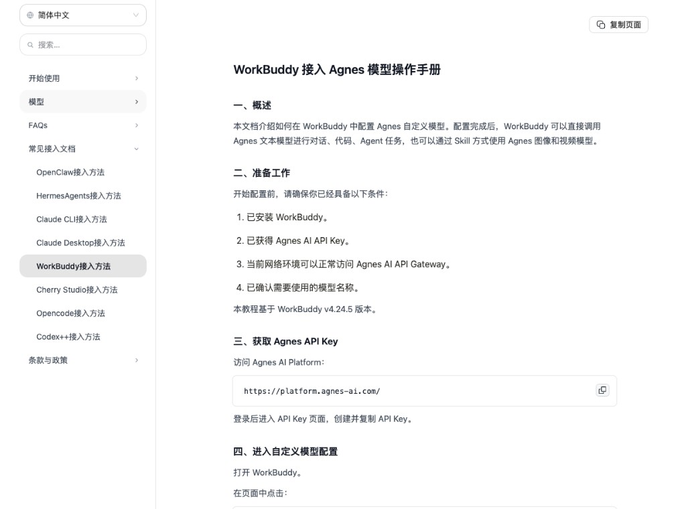
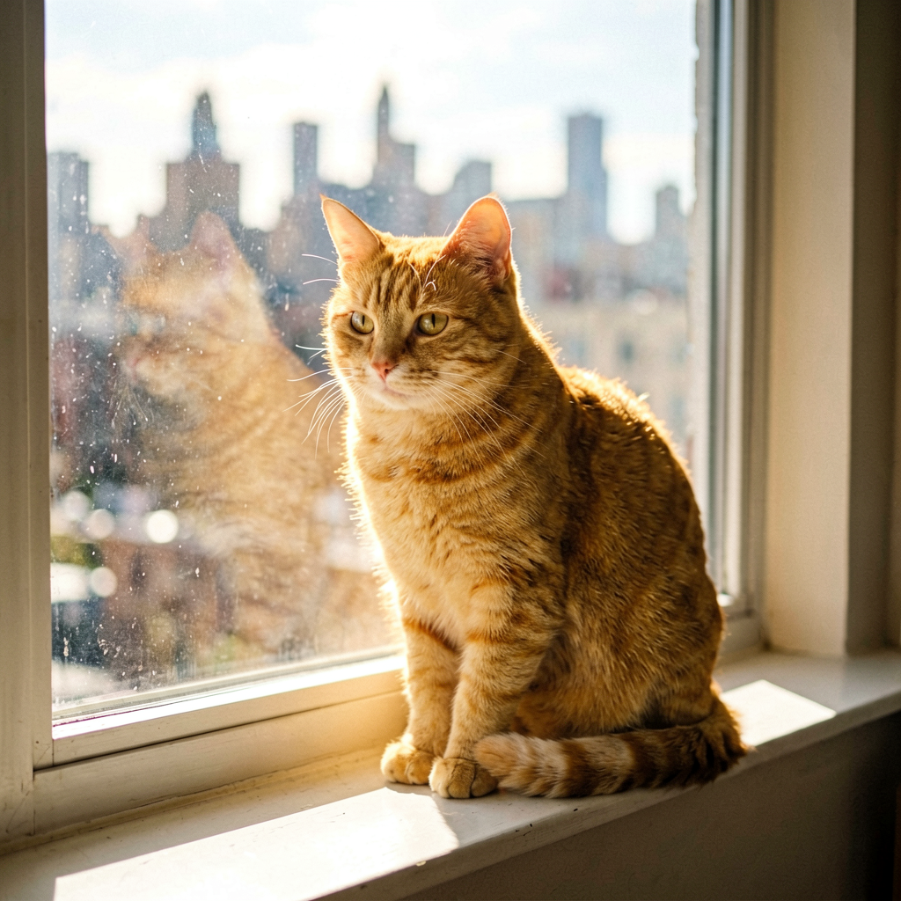
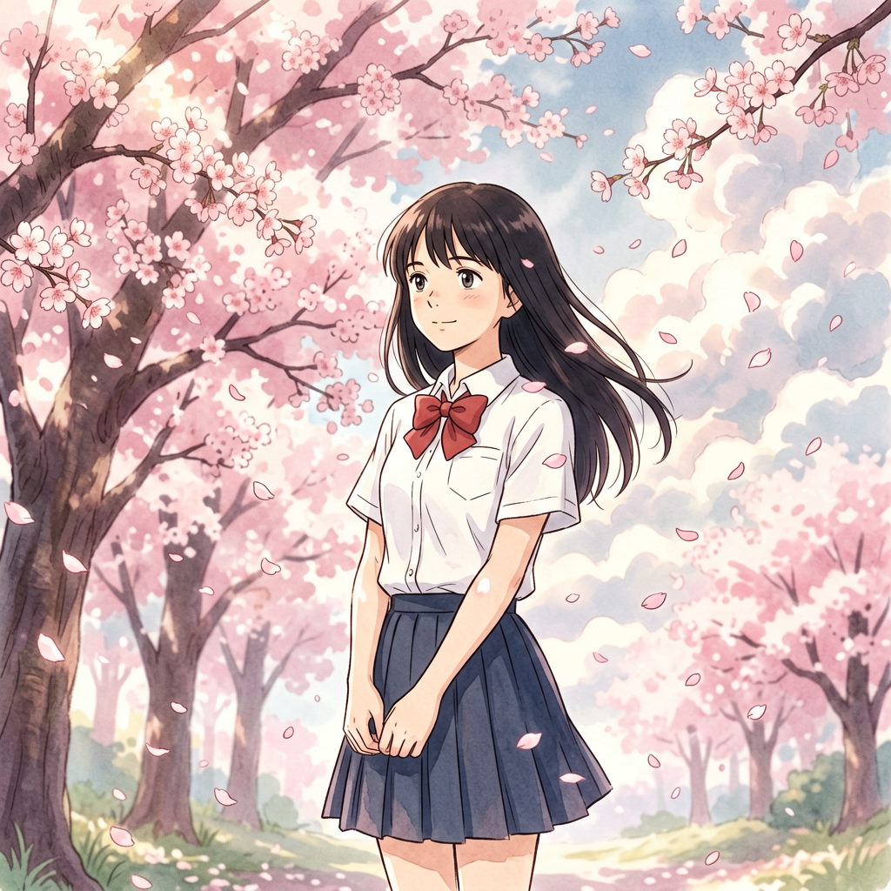
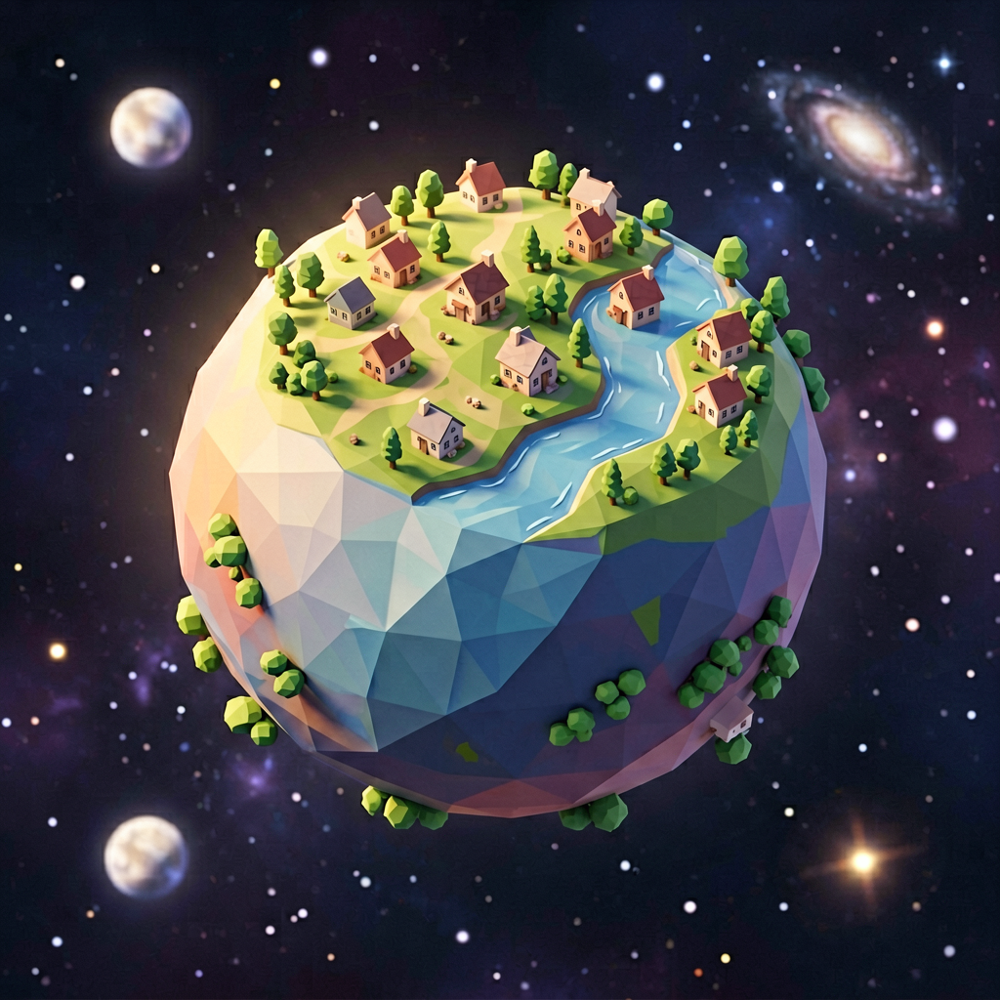
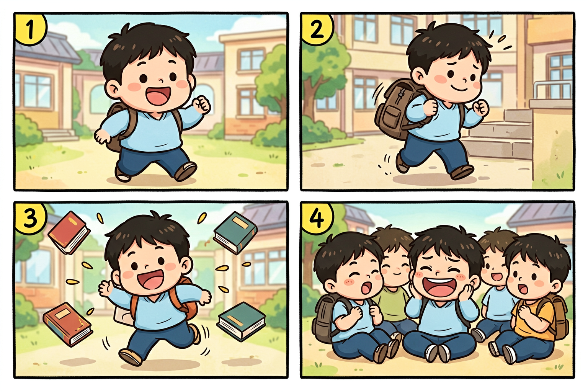
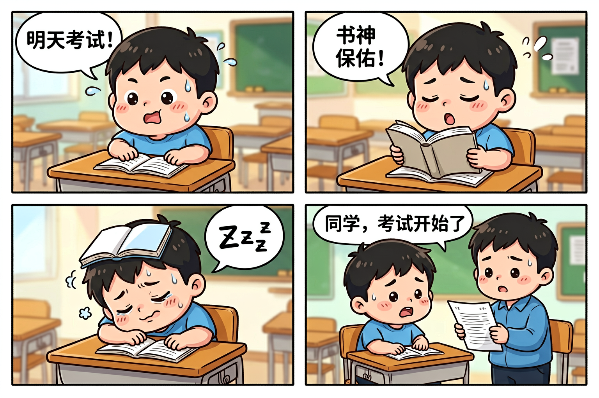
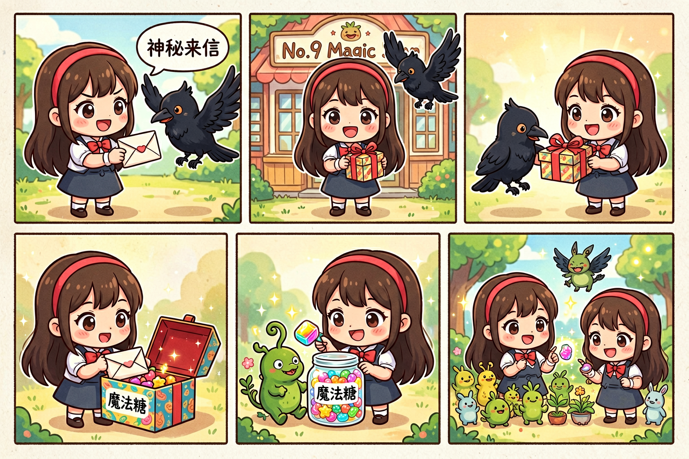

Agnes 无限期免费：普通人接入实测
header.png
零成本接入 · 跟着步骤就能用
技趣星球 · 用技术创造乐趣
打开 agnes-ai.com，首页写着「前沿模型，免费畅用」。
底下三张对比图更直白：文本模型在 ClawEval 榜单里能跟 Claude、GPT 同台；生图、视频模型在 Artificial Analysis 盲评里也有名次。
对普通人来说，这句话的意思很简单——不用每月掏订阅，也能接一套还不错的多模态模型：能聊天问答、能生图、也能生成视频。
我按官网指引接进 Agent 工具，实测了一圈。问答和生图都顺利；视频提交了任务，一直在排队，最后没出片。
下面是我的接入过程和真实结果，你可以照着做。
难度：⭐⭐ 注册拿 Key + Agent 配一次模型，大概 10 分钟。
Agnes 是什么？普通人用得上的地方
Agnes AI 背后公司是新加坡的 Sapiens AI，主打「让世界级 AI 属于每一个人」。
目前对个人免费开放三条能力线：
官网 slogan 是「全栈多模态 AI——文本、图像与视频，行业顶尖水准」。我体验下来，前两样对普通人已经够用；视频先放低预期。
agnes-homepage-brand.png

价格和开放政策可能调整，使用前以 platform.agnes-ai.com 页面为准。
哪些 Agent 工具能接？
Agnes 走 OpenAI 兼容接口，理论上支持自定义模型的 Agent 都能接。我试过的结果：
你手头有 Trae 或 WorkBuddy，直接往下走。只有 Qoder 的话，可以先用文末的 curl 命令测，或换上面两个工具之一。
接入教程
核心就三步：拿 Key → 配文本模型 → 打包生图/视频 Skill。下面以 Trae 为例演示，WorkBuddy 配置项一样，只是入口位置不同。
第一步：拿 API Key
难度：⭐
- 打开 platform.agnes-ai.com，注册登录
- 左侧进入「设置 → API 密钥」，点「创建新的密钥」，复制保存
不花钱，不用绑信用卡。页面上写着三步：创建密钥 → 接入 Agnes 多模态免费模型 → 开始探索。
agnes-api-key.png

第二步：配文本问答模型
难度：⭐⭐
三个配置项各家工具都一样：
Trae CN：进入「设置 → 模型」，点「添加模型」，选「自定义配置」标签，API 格式选 OpenAI Chat Completions，填入上表三项：
trae-model-config.png

WorkBuddy：对话区点「Auto」→「配置自定义模型」，同样填入上表，保存后选中 agnes-2.0-flash。官方有详细图文教程，见文档「WorkBuddy 接入方法」：
workbuddy-agnes-doc.png

接好后，日常问答、写提示词、整理需求都可以走 Agnes，不占用工具自带额度。
第三步：生图 Skill
难度：⭐⭐
生图不走普通对话接口，需要打包成 Skill。在 Agent 对话框里发：
我想使用 Agnes Image 2.1 Flash 模型生图。
请阅读 API 文档 https://agnes-ai.com/doc/agnes-image-21-flash，
帮我打包成一份 Skill，命名为 agnes-image-gen。
我的 API Key 是：（粘贴你的 Key）完成后在 Skills 面板能看到 agnes-image-gen。
trae-skill-panel.png

安全提醒：Key 写进本地配置或环境变量，别发到公开群。Skill 建好后可改成 $AGNES_API_KEY 占位。
第四步：视频 Skill（可选）
我想使用 Agnes Video v2.0 模型生成视频。
请阅读 API 文档 https://agnes-ai.com/doc/agnes-video-v2-0，
帮我打包成一份 Skill，命名为 agnes-video-gen。
我的 API Key 是：（粘贴你的 Key）视频是异步任务：提交 → 排队 → 生成 → 完成才有下载链接。我卡在排队阶段，下文单独说。
文本问答：接进去就能聊
难度：⭐
文本模型配好后，在 Agent 对话区直接问就行。
我试了让它帮忙改四格漫画剧情、把中文需求翻成英文提示词，回答速度正常，长上下文也扛得住。官网提到支持 1M 超长上下文，对整理长文档、总结资料这类活比较友好。
不想用 Agent 工具，curl 也能测：
curl -s https://apihub.agnes-ai.com/v1/chat/completions \
-H "Content-Type: application/json" \
-H "Authorization: Bearer 你的API_Key" \
-d '{
"model": "agnes-2.0-flash",
"messages": [{"role": "user", "content": "你好，帮我写一段四格漫画剧情"}]
}'生图实测：多风格出图 + 三张四格漫画
生图是我测得最顺的一块。写实、动漫、3D、四格漫画都试过，横版 1536x1024 大约 15～20 秒出一张，0 元。
不想走 Skill，终端一条 curl 也能出图：
curl -s https://apihub.agnes-ai.com/v1/images/generations \
-H "Content-Type: application/json" \
-H "Authorization: Bearer 你的API_Key" \
-d '{
"model": "agnes-image-2.1-flash",
"prompt": "你的图片描述",
"n": 1,
"size": "1536x1024"
}'多风格试画：写实、动漫、3D 都行
难度：⭐
不只做漫画，换几种风格也试了，效果都不错。
写实摄影——橘猫窗台
style-01-photo-cat.png

光影自然，毛发质感在线，没有明显 AI 塑料感。
日系动漫——樱花少女
style-02-anime-girl.png

色调柔和，线条干净，适合做头像或插画草图。
3D 渲染——低多边形星球
style-03-3d-planet.png

等距视角、低多边形风格，拿来做 PPT 配图或 App 占位图都够用。
实测一：无字四格，先锁画风
难度：⭐
四格漫画，Q萌桂宝风格（圆脸蛋、粗线条、搞笑夸张，类似《桂宝》漫画），校园搞笑小故事：
第1格，圆脸小胖男孩背着书包兴奋出门；
第2格，他背着沉重书包在楼梯上挣扎；
第3格，绊了一跤，书本满天飞；
第4格，坐在地上哈哈大笑，朋友围过来。
粗线条、明亮色彩、夸张表情，幽默温馨。comic-01-campus-no-text.png

四格边界清楚，人物前后一致。建议先无字跑通画风，再加气泡。
实测二：带中文气泡，考试前夜
难度：⭐⭐
四格漫画，Q萌桂宝风格，带中文对话气泡，教室背景：
第1格，小胖男孩坐课桌前满头大汗，气泡写「明天考试！」；
第2格，闭眼对着课本祈祷，气泡写「书神保佑！」；
第3格，趴在桌上睡着，课本盖头上，气泡写「Zzz」；
第4格，老师拿试卷站旁边，气泡写「同学，考试开始了」。
粗线条、明亮色彩、夸张表情。comic-02-exam-night.png

中文气泡大部分能对上，台词越短越稳。
实测三：五格奇幻，魔法糖故事
难度：⭐⭐
五格漫画，Q萌奇幻风格：
第1格，长发戴发箍女孩收到黑乌鸦送来的信，气泡「神秘来信」；
第2格，她站在「第九号魔法商店」门前，乌鸦在旁飞翔；
第3格，乌鸦递给她礼物盒；
第4格，她打开盒子，彩色糖罐标签写「魔法糖」；
第5格，她用魔法糖把植物变成小怪物，和同桌斗智斗勇。
鲜艳配色，可爱角色，奇幻校园感。comic-03-magic-candy.png

五格塞进一张图，后面几格会略小，但故事能读懂。验证脑洞够用，出版级建议一格一图再拼版。
视频实测：进了排队，没出片
生图很顺，我顺手测了 agnes-video-v2.0。官网宣传原生音画同出，不用单独配音，听起来很香。
提示词：
一杯热咖啡缓缓倒入白色陶瓷杯，液面泛起细腻泡沫，升起袅袅热气，
柔和晨光背景，慢镜头，ASMR 风格轻柔配乐。通过 agnes-video-gen Skill 提交，接口返回：
{
"status": "queued",
"seconds": "5.0",
"size": "1280x704"
}状态一直是 queued。每隔 30 秒轮询，等了约 5 分钟，没变成 processing 或 completed。
可能原因（个人推测）：免费视频调用量大、高峰排队久、或需要更长等待时间。
结论：问答和生图可以放心免费试；视频目前别急着等——提交了先放着，晚点再查。非高峰时段或把轮询延长到 15～20 分钟，也许有机会。
手动查任务状态：
curl -s "https://apihub.agnes-ai.com/v1/video/generations/你的task_id" \
-H "Authorization: Bearer 你的API_Key"适合谁、不适合谁
适合：
- 想零成本试一套多模态 API 的普通人
- 用 Trae、WorkBuddy 做 Agent 工作流，想省 Token 账单
- 需要配图、漫画草图、课件插画的老师或自媒体
暂时别指望：
- 视频即提交即出片（我这次排队失败）
- 生图气泡文字 100% 正确
- Qoder 等不支持自定义接口的工具直接接入
- 完全替代付费顶级模型的所有场景
今天的小结
实测下来，普通人免费接入 Agnes，目前最稳的是这两样：
- 文本问答：配好 agnes-2.0-flash，日常聊天和写提示词够用
- 图片生成：四格漫画按「画风 → 无字分镜 → 加气泡」三步走，出图快、质量不差
视频能力在官网和文档里都有，但我这次没跑通，建议低预期。
官网：agnes-ai.com 文档：agnes-ai.com/doc 控制台：platform.agnes-ai.com